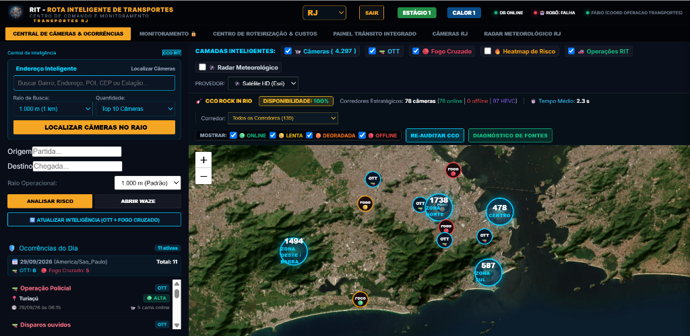
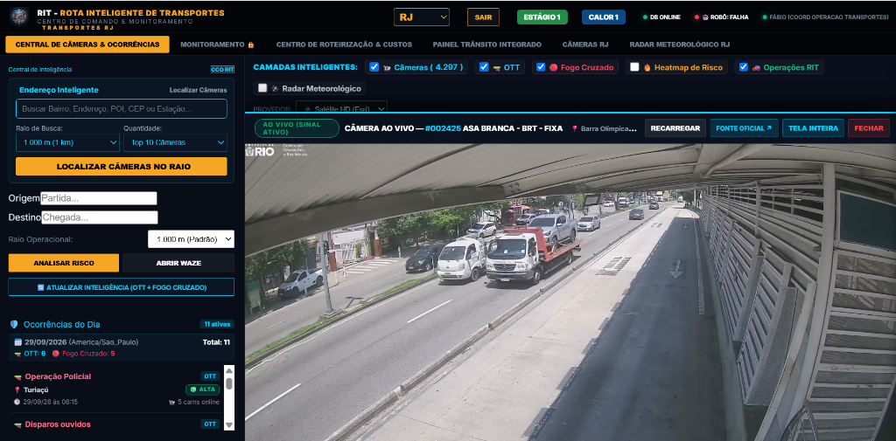
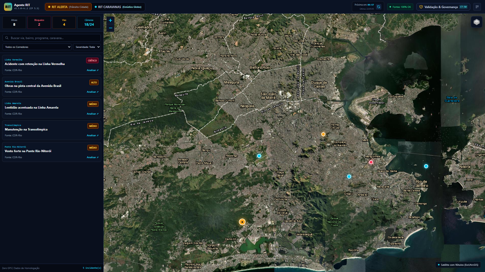
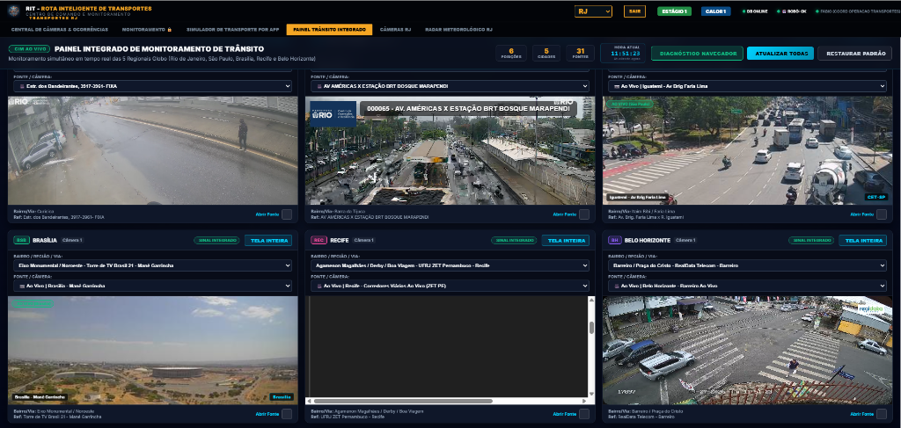
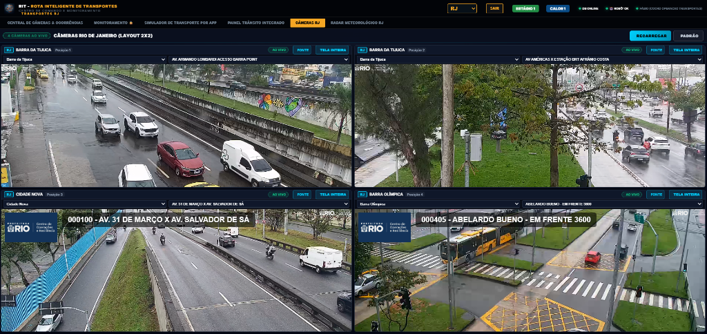
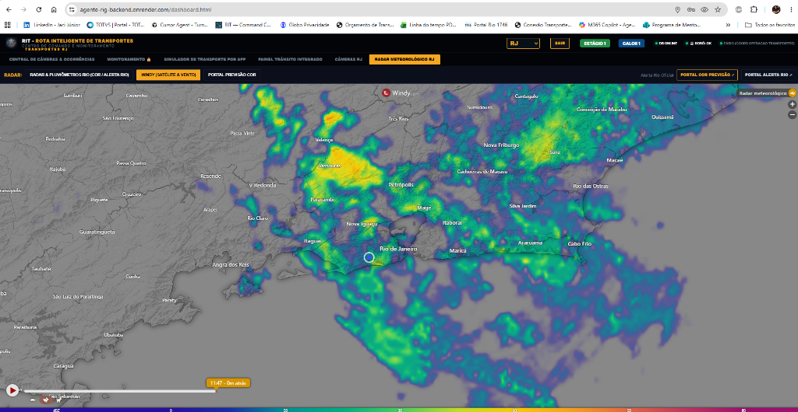
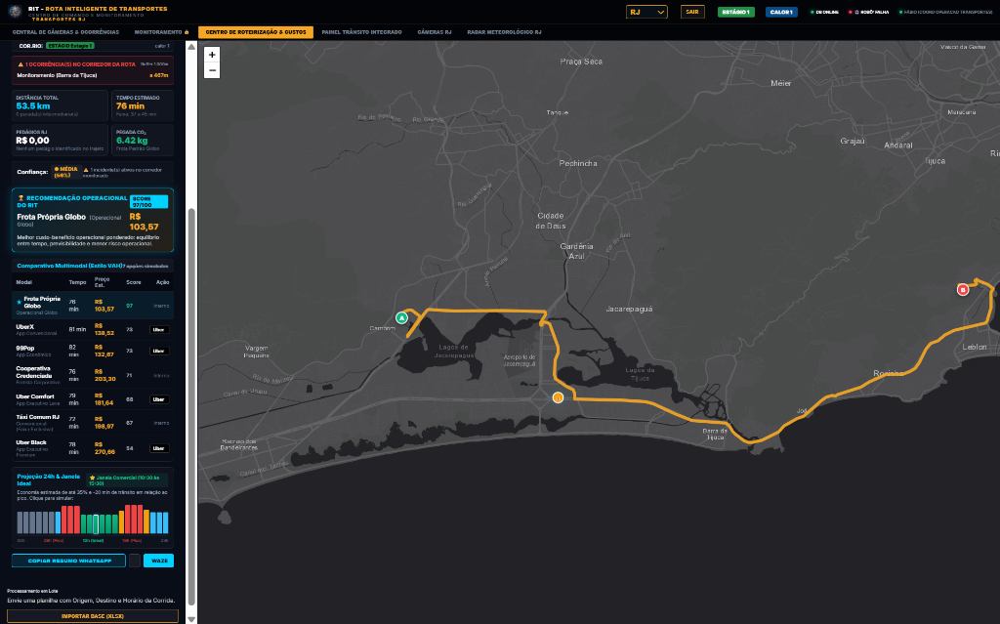
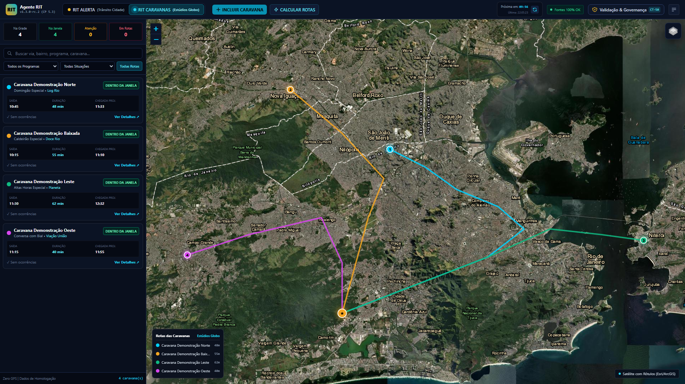
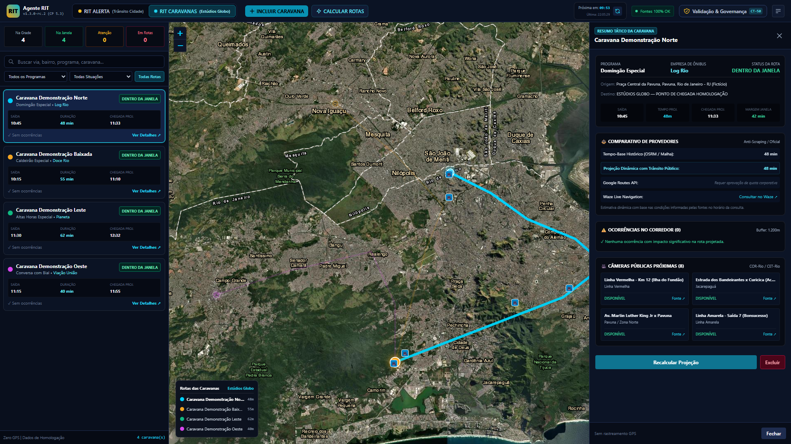

ROTA INTELIGENTE DE TRANSPORTES
Centro de Comando, Monitoramento e Otimização Logística Urbana em Tempo Real · Suporte Operacional Globo CCO
Central de Câmeras & Ocorrências Viárias
Painel tático de monitoramento cobrindo mais de 4.297 câmeras de trânsito em alta definição, georreferenciamento de incidentes viários (COR, CET-Rio, OTT e Fogo Cruzado) e mapas de satélite HD.
4.297 Câmeras de Trânsito Ativas
Visualização instantânea de feeds de concessionárias e CET-Rio com streaming contínuo no CCO.
Camadas Inteligentes: OTT, Fogo Cruzado & Heatmap
Sobreposição geográfica de incidentes, disparos, operações policiais e manchas de risco em tempo real.
Busca por Raio Inteligente (1 km a 5 km)
Identificação automática das 10 câmeras mais próximas de qualquer endereço ou ocorrência na malha.


RIT Alerta + Condições Operacionais
Monitoramento contínuo de incidentes em tempo real integrando feeds da CET-Rio, COR, Lamsa, EcoPonte e concessionárias, com painel tático de condições de vias das 5 capitais Globo.
Priorização Automática de Ocorrências
Triagem instantânea de acidentes, obras e interdições com cálculo de atraso e impacto na malha viária.
Classificação por Severidade & SLA Operacional
Níveis canônicos (Crítico, Médio, Baixo) para direcionamento prioritário aos operadores do CCO.
Telemetria de Vias das 5 Regionais Globo
Status operacional das principais vias expressas de RJ, SP, BSB, REC e BH consumindo traffic-conditions.json.

| Via / Corredor | Status Operacional | Tempo Atual | Tempo Ref. | Variação |
|---|
Painel Trânsito Integrado
Visão regional unificada e telemetria dos principais corredores, rodovias e eixos viários metropolitanos, consolidando fluxos de tráfego e ocorrências das capitais operacionais Globo.
Visão Integrada de Corredores Expressos
Acompanhamento centralizado de eixos arteriais, rodovias de ligação e eixos de acesso aos centros de produção.
Telemetria de Velocidade & Retenção
Medição em tempo real de lentidão, velocidade média e tempos médios de percurso nas vias expressas.
Suporte Decisório para Equipes de Operação
Alertas antecipados de engarrafamentos e interdições para replanejamento dinâmico de saídas de estúdio.

Câmeras RJ — Mosaico 2x2
Matriz de monitoramento visual simultâneo 2x2 de alta resolução, permitindo aos controladores do CCO acompanhar múltiplos pontos estratégicos sem necessidade de alternar janelas.
Mosaico Quádruplo Simultâneo
Exibição sincronizada de 4 câmeras de trânsito em alta definição das principais concessionárias e vias expressas.
Seleção Rápida de Pontos Críticos
Acesso instantâneo a Linha Amarela, Linha Vermelha, Ponte Rio-Niterói, Transolímpica e Aterro do Flamengo.
Confirmação Visual Imediata para o CCO
Validação visual imediata de ocorrências viárias antes de despachar orientações táticas para a frota.

Radar Meteorológico RJ
Monitoramento meteorológico contínuo com imagens de radar, manchas de precipitação e análise preditiva de chuvas para planejamento seguro de operações de transporte e equipes de externa.
Radar Meteorológico em Alta Resolução
Integração de feeds meteorológicos com projeção de deslocamento das nuvens de chuva e intensidade de precipitação.
Prevenção Logística de Alagamentos
Antecipação a bolsões d'água e vias com risco de interdição pluvial na Baixada Fluminense, Zona Norte e Zona Oeste.
Proteção das Equipes de Externa
Definição de rotas seguras e janelas operacionais durante eventos climáticos adversos na malha do Rio.

Centro de Roteirização & Custos Multimodal
Motor de cálculo tarifário e análise de eficiência comparando rotas entre a Frota Própria da Globo e 7 modais de aplicativos com projeção horária de trânsito em 24h.
Comparativo Multimodal Estilo VAH (7 Modais)
Simulação em tempo real: Frota Globo (R$ 103,57), UberX, 99Pop, Cooperativa, Uber Comfort, Táxi e Uber Black com score de custo-benefício.
Projeção 24h & Janela Comercial Ideal
Identificação algorítmica de horários fora de pico com economia estimada de até 35% e -20 min de retenção viária.
Cálculo de Pedágios & Pegada CO₂
Auditoria automática de custos de pedágio no trajeto e cálculo de impacto ambiental (kg de CO₂ por viagem).

Caravanas Inteligentes
Planejamento dinâmico, monitoramento de janelas de chegada e suporte tático para caravanas de auditório e operações de plateia destinadas aos Estúdios Globo.
Cadastro & Geocodificação Offline Imediata
Modal com validações inline e cálculo de traçado geodésico para 5 CDs sem dependência de APIs externas pagas.
Visualização Multi-Rota em 7 Cores & Lote
Plotagem simultânea com diferenciação cromática canônica e botão de recálculo unificado de trajetos.
Painel Lateral Tático, Câmeras & Comparativo
Associação de câmeras a até 2.500m do trajeto, telemetria Google/Waze e suporte a desvios consultivos via painel lateral retrátil.

